Introducing Gemini 3.7 Flash
Aug 13, 2026
|Our most intelligent workhorse model yet for coding and agents.

Today, we’re building on the progress of our widely used Flash series by introducing Gemini 3.7 Flash, our most intelligent workhorse model yet for coding and agents.
This release comes just three weeks after Gemini 3.6 Flash, and is a direct result of developer feedback and algorithmic innovations that we look forward to bringing to future models. 3.7 Flash delivers substantial improvements across software engineering, knowledge work, and web development workflows — with an introductory price of half the original 3.6 Flash cost per million tokens.
Better intelligence for complex workflows
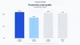
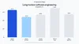
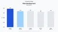
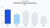
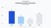
3.7 Flash shows strong gains over 3.6 Flash in coding tasks like debugging and issue resolution. It also achieves higher first-pass code accuracy and has improved performance in generating production-ready code as seen in FrontierCode 1.1 Main (43.6% vs 34.4%) and DeepSWE v1.1 (65.3% vs 49.0%).
In web development, 3.7 Flash generates more functional layouts and feature-complete apps in fewer prompts. For UI generation, the model shows high design adherence and parity based on a reference input, whether it’s a screenshot, an image, or a full design system. It outperforms 3.6 Flash on Arena.ai’s WebDev Arena with an Elo score of 1588 vs 1538.
For knowledge-dense fields like finance, law, and biosciences, 3.7 Flash delivers improved reasoning and accuracy. It significantly outperforms 3.6 Flash on the GDP.pdf benchmark (34.0% vs 22.0%), an eval for testing a model’s ability to process complex documents. It also surpasses 3.6 Flash in AutomationBench, demonstrating it can more effectively complete real-world business workflows (30.4% vs 17.0%).
From a simple text prompt to a fully playable 3D game. We used Gemini 3.7 Flash combined with Nano Banana to dynamically generate characters, items, and textures in real-time.
Stunning, interactive landing pages generated in a single shot. We used Gemini 3.7 Flash to orchestrate sub-agents, using Gemini Omni to create smooth, interactive parallax components.
A robotics model getting trained with Gemini 3.7 Flash using multimodal understanding in a 3 agent graph loop that helps the robot learn faster.
From a static PDF to an interactive data story. Watch how complex annual reports are transformed into engaging web experiences complete with live charts and aggregated insights.
Better developer experience and price
Gemini 3.7 Flash delivers a noticeably improved developer experience over 3.6 Flash. It better adapts to roadblocks, clarifies intent when needed, and follows instructions with greater fidelity. It thinks more diligently, putting in more effort into multi-step planning and tool calls. A more disciplined execution means less manual oversight and fewer retries across engineering workflows.
3.7 Flash is available through the end of the year at an introductory price 1 of $0.75/1M input tokens and $3.75/1M output tokens. This price combined with the enhanced model performance enables developers and customers to scale production-ready agents cost effectively.
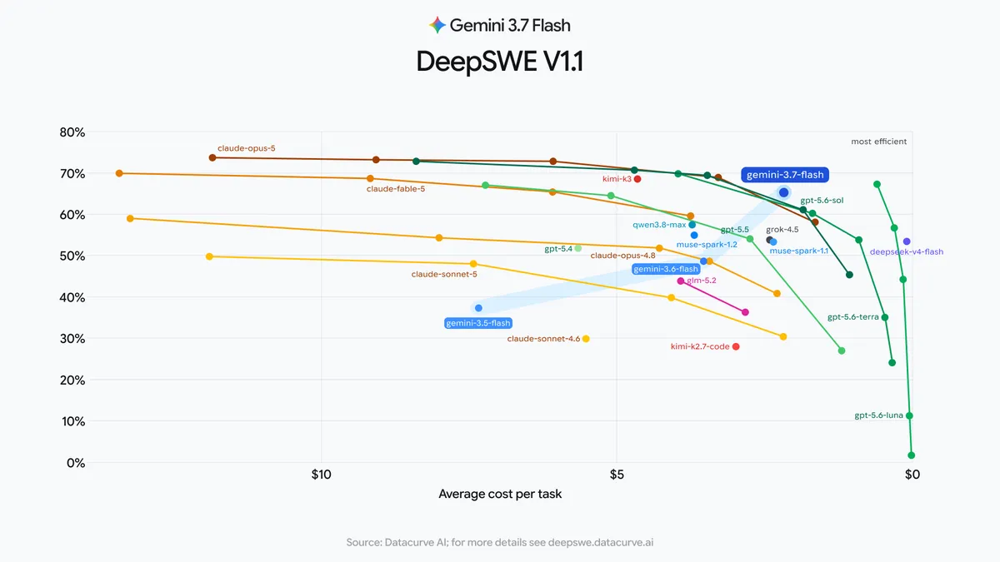
Early customer feedback is highlighting 3.7 Flash’s performance and precision, achieving results that are significantly better than 3.6 Flash at a low cost.
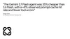
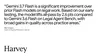
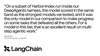
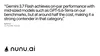
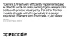
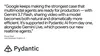
Improving Gemini Spark with 3.7 Flash
Gemini Spark, available to Google AI Pro and Ultra subscribers in over 160 countries, will be using Gemini 3.7 Flash starting today. We launched Spark at I/O as your personal AI agent that runs 24/7, taking action on your behalf while under your direction. This model update makes Spark more efficient for knowledge work with improved tool use for Google Workspace apps, delivering improved accuracy and output quality for complex, multi-skill workflows.
With 3.7 Flash, Gemini Spark can turn ideas into action more efficiently by consolidating files, drafting emails, and updating status documents.
Built with safety in mind
We continually work to improve the coverage and robustness of Frontier Safety safeguards. Gemini 3.7 Flash is shipping with updated safeguards against misuse in the domains of Chemical, Biological, Radiological, and Nuclear (CBRN) and cyber offense, while enabling beneficial use cases, in accordance with our approach to bioresilience and our cyber program.
For more information, see the 3.7 Flash model card.
Try it today
- Developers: Explore agent-first workflows in Google Antigravity or start building today in the Gemini API via Google AI Studio and Android Studio. Get started with our developer guide.
- Enterprises: Access 3.7 Flash in Gemini Enterprise Agent Platform and the Gemini Enterprise app.
- Individuals: Available via Spark, your 24/7 personal agent in the Gemini app for Google AI Pro and Ultra subscribers in supported countries.
Detailed benchmarks
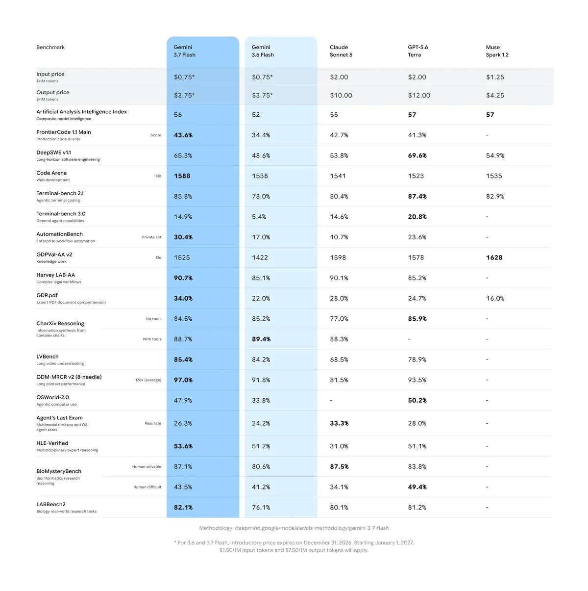
Get the latest news from Google in your inbox
Sign up for our newsletters with product updates, event information, special offers, and more.
Done. Just one step more.
Check your inbox to confirm your subscription.
You can also subscribe with a .
Your information will be used in accordance with Google's privacy policy. You may opt out at any time.